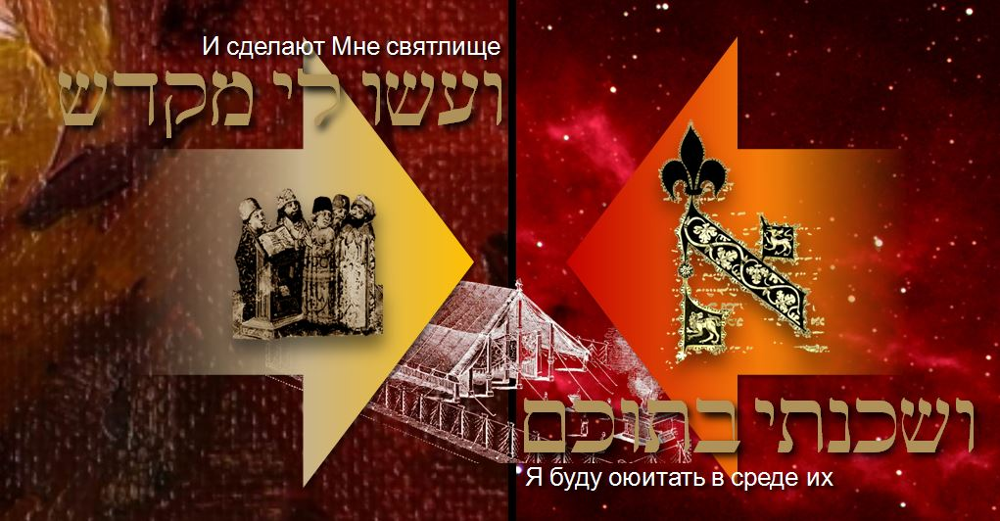

Святилише - МИШКАН и МИКДАШ
В Писании мы неоднократно читаем, что Бог не живет в рукотворных палатках, даже, если они каменные. И вся земля не в способна вместить Его. Тем не менее, Творец вселенной полагает условие Своего пребывания посреди Израиля: вы должны сделать Мне святилище!

- эта фраза заключает в себя два встречных процесса, долженствующие найти свое символическое выражение в постройке, которая поручена была художнику Бецалелю, но и всему Израилю: «ОНИ устроят», всякий, у кого было усердие – жертвовал на это святилище. И многие мудрые сердцем выполняли отдельные виды работ по его устройству.
Одно слово – МИКДАШ (однокоренное с известным словом КАДОШ – святой). МИКДАШ – святилище.
Другое – МИШКАН (однокоренное с известным словом ШХИНА – слава Божья или присутствие Божье, часто используемым в Талмуде). МИШКАН – место пребывания. В синодальном переводе МИШКАН – скиния. В нем все еще слышится слово ШХИНА.
Иврит – отглагольный язык. Т.е. в существительных можно видеть некое действие. Таким образом, в слово МИКДАШ содержит в себе действие со стороны народа Израиля – посвящение («они сделают Мне»). Это значит: они посветят себя Мне полностью – их жизнь, поклонение, творчество. Всем, что они творят в своей жизни, они устроят Мне святилище.
Всевышний, в свою очередь, обещает действие со Своей стороны: «Я буду обитать среди них». Обитать – ШАХАНТИ. Другие слова того же корня переводятся как пребывать, соседствовать, сосед. Т.е. Я буду очень близок к ним и буду им всем, в чем они только нуждаются. Соответственно другое название святилища в Торе – МИШКАН.

Бог обещает Свое присутствие посреди Израиля (МИШКАН) в ответ на действие посвящения Израиля, которое в нашем случае (Исх.25) символизирует творчество по созданию святилища (МИКДАШ).
Это творческое произведение становится зримым выражением намерений сердца людей, выражением их готовности освящаться.
Микдаш – знак, послание народу, нечто, побуждающее к высшему откровению.
Мишкан – символ Божьего покоя (не случайно - заповедь о шаббате буквально вплетена в указания о строительстве мишкана).
***
ДАНИЭЛЬ КРУГЛОВ: муз. импровизация на н.гл. Торы (Шемот /Исх./ 25:1-27:19)
еще одну версию того же видео сюжета можно посмотреть здесь.
автор: Эфраим Калиш /TORAART/
ЕСЛИ ЭТОТ МАТЕРИАЛ БЫЛ ВАМ ПОЛЕЗЕН, ПОЖАЛУЙСТА, ПОДЕЛИТЕСЬ ИМ С ДРУЗЬЯМИ